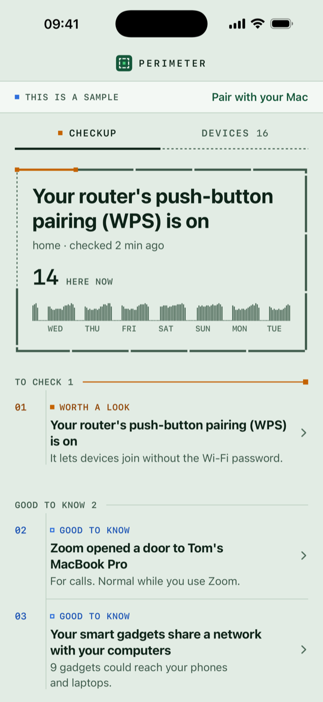

The checkup
Is anything wrong?
The top of the screen answers that in one line: “All clear”, or the one thing worth a look.
Under it, short notes say what each thing is, why it matters and what to do, a step at a time, in the words your router’s own settings page uses. Each says how much it matters in words as well as colour: fix soon, worth a look, or good to know.
